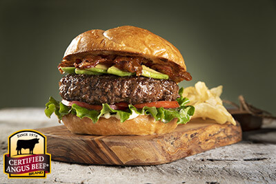

Burgers
Avocado Bacon BBQ Burger

Description:
Juicy, tangy, and thick burgers topped with fresh avocado, crispy bacon, and a zesty barbecue sauce. Perfect to serve up during those summer months.
Ingredients:
- 1 1/2 pounds ground beef, 80% lean
- 1 egg
- 1/2 cups bread crumbs
- 1 teaspoon garlic powder
- 1 teaspoon onion powder
- 1 teaspoon red chili powder
- 1 teaspoon paprika
- 8 Slices bacon
- 1-2 tomatoes (yield 6-8 slices)
- A head of lettuce or bag of spinach
- 1 avocado (2 if you like extra avocado like me)
- 1 1/2 teaspoons kosher salt
- 1 teaspoon fresh cracked black pepper
- 3-4 tablespoons barbecue sauce (more if you like it extra saucy)
- 4 burger buns (my recommended bun is a brioche onion bun, but any will do)
Steps:
- Put ground beef into a bowl then crack the egg into it
- Add breadcrumbs, garlic powder, onion powder, chili powder, and paprika to the bowl
- Mix beef and egg mixture with hands, forming into 4 equal sized patties (about 6-ounces each);refrigerate
- Prepare toppings: cook bacon til crispy, wash lettuce/spinach, slice tomato and avocado; Set aside
- Preheat 3/4 grtill to medium heat and season patties with salt and pepper. Place burgers over direct heat and grill 2-3 minutes on the first side. Flip and baste with barbecue sauce and grill 2-3 more minutes
- Flip again and baste with barbecue sauce and move patties to the cool side of the grill to finish cooking (internal temperature should reach 160°F)
- Build your burgers from bottom to top; bottom bun, lettuce/spinach, tomato, burger, bacon, avocado, and top bun. Additional barbecue sauce can be placed directly on the burger, between it and the bacon for more flavor
- Enjoy your juicy and tangy Avocado Barbecue Bacon Burgers